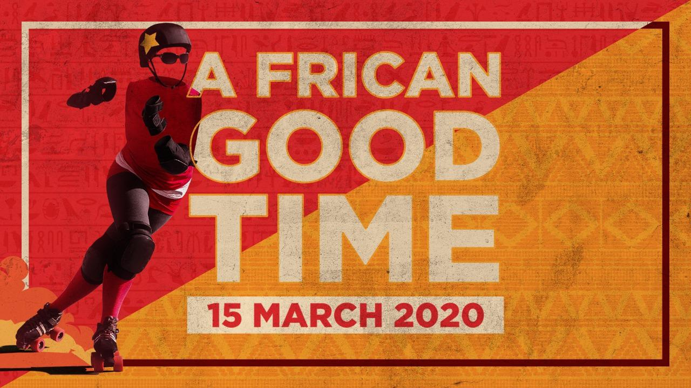
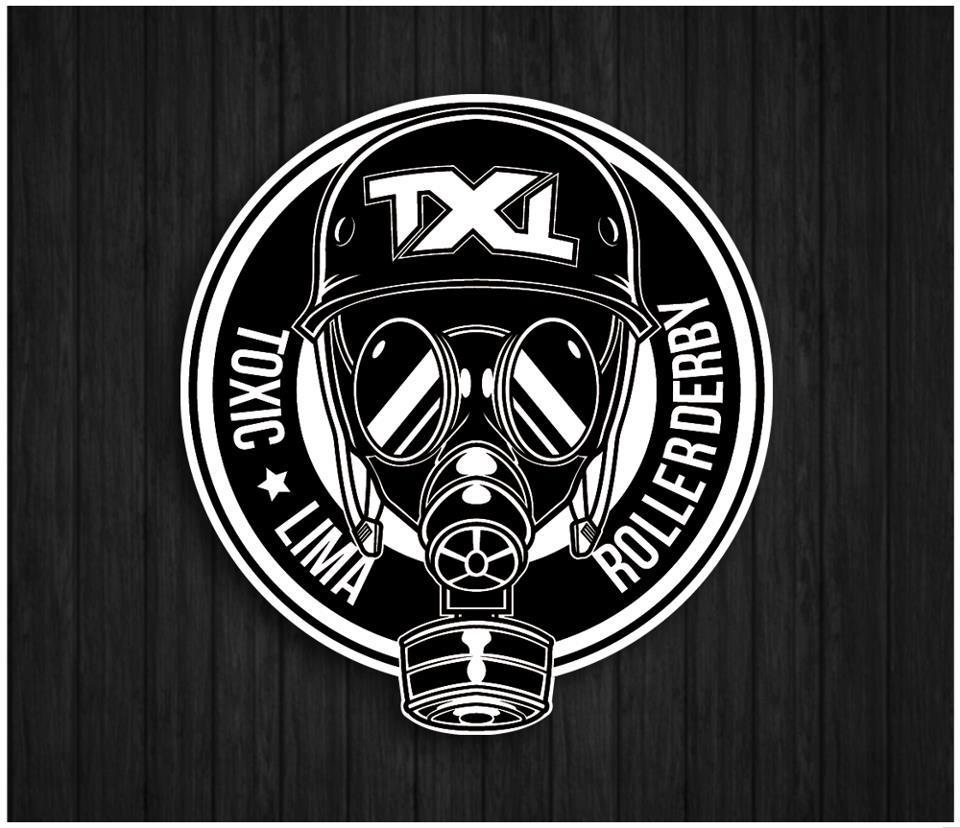
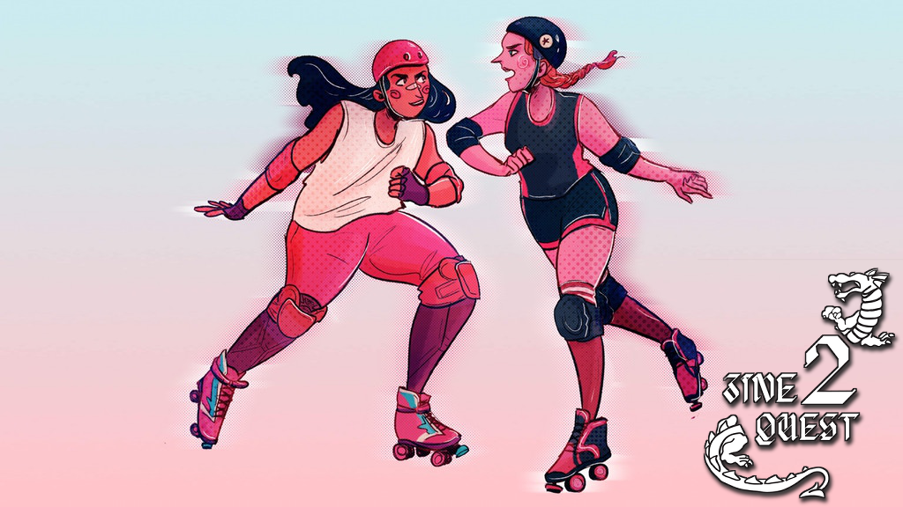
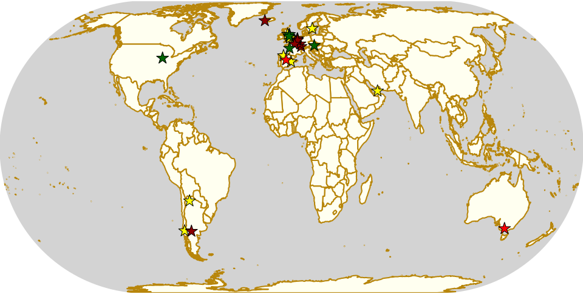
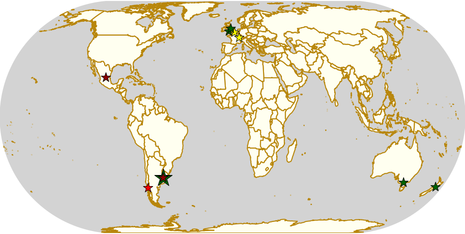

African Good Time: The most important Roller Derby tournament this year.
There's always exciting Roller Derby firsts, and international match ups every year in the calendar, and we can usually argue about just which event was the highlight of the year.
In 2020, though, we already have a very strong candidate, as Egypt's CaiRollers and South Africa's Golden City Rollers make history with the first every intra-African Roller Derby tournament.
As we've written about previously, South African roller derby exists in its own geographical bubble, far from other nations; but the CaiRollers have had almost as much trouble finding regular opponents (despite being just across the Mediterranean from Greece, and not that far from Italy and Austria). After making history with the first MENA game (against Abu Dhabi Roller Derby in January 2017), and playing Marseille's Bloody Skulls in mid 2017, the CaiRollers have had no other international opponents.
So, since October 2018, they've been planning something more audacious: raising funds to travel themselves, down to Johannesburg. Readers will remember their Indiegogo fundraiser, which did not reach its target, to achieve this by 2019... but the funds that were raised there have been the basis of further money-raising within Cairo itself. Profits from local events, including a recent home teams game at the start of February, have all been funnelled into the venture, and individual skaters have spent personal funds on making their flight bookings. This will be the CaiRollers' first ever away bout, and it's a huge step to make in addition to the usual issues that come with playing away!
This has always been a collaborative effort between Golden City Rollers and the CaiRollers, but as GCR told us, it's grown since the initial plan of just a single game:
"CaiRollers first contacted us with the idea for this event in October 2018, and we have literally been counting the days since! Last year, GCR and CaiRollers decided to run a tournament instead of just one game and we invited other South African leagues to participate. With travel costs being a challenge, Durban Roller Derby and Cape Town Rollergirls opted to form a mixed team, along with some players from UAE All Stars, where an ex-GCR-skater currently lives. They'll compete together as the Pan-African Rollers. It's been both challenging and exciting pulling together our first international tournament, but we've learned a lot along the way and we're hoping this will be the first of many more to come. Only days to go now...we can't wait to have all the teams here and on the track!"
This also makes this the first year that South Africa will host two tournaments with teams from across their own country: normally this happens just the once, in their end-of-year Derbyfest. As with Derbyfest last year, this will be a three-teams round-robin, followed by a "finals" playoff for the top two teams from that stage.
We are assured that there will be a complete livestream for all games in the tournament schedule, although the link for this is yet to be distributed. (We'd keep an eye on GCR's Facebook event page for more info.)
| Time (SA) | Time (UTC) | Team 1 | Team 2 |
|---|---|---|---|
| 1000 | 0800 | CaiRollers | Pan-African Rollers |
| 1130 | 0930 | Pan-African Rollers | Golden City Rollers |
| 1300 | 1100 | CaiRollers | Golden City Rollers |
| 1500 | 1300 | Top 1 | Top 2 |
In addition to the public schedule, there will also be an all-day bootcamp on the Saturday, providing maximum benefit to all attending teams.
We hope to bring you a longer article as a post-mortem on the whole event, in a few weeks' time, but for now: put a pin in this for your diary!
Danish Champs - All Sevens and...
As Roller Derby grows across a country, inevitably people start thinking about having a National Tournament (usually around the time they think about needing a National Governing Body). So, whilst some Nationals - in, say Mexico or Sweden - have been running for a very long time - there's always new National tournaments forming.
On the 1st of February, Denmark held its first National Tournament in 4 years, taking the unusual (worldwide) step of using the Roller Derby Sevens ruleset. This tournament was the result of both conception and huge commitment by one person - Aalborg Roller Derby 's Möxie Crüel, so we caught up with her to discuss the genesis of the tournament, it's aims and plans for the future.
Roskilde versus O-Town (Odense) in the DM, first game [Photo by BrknRib Photo and Artwork]
Toxic Lima: Roller Derby in Peru 2019
Whilst 2x4 and Sailor City have made Argentine Roller Derby more familiar to the kind of audiences who only follow Division 1, there's been Roller Derby across South America for longer than they might expect.
Since 2010, Perú has hosted Roller Derby in the form of its only league, Toxic Lima Roller Derby . We have been lucky enough to be able to talk to one of their longer-standing members, Twerkin Pony, about the history, and present, of Roller Derby in Perú.
Derby Drama: Role Playing Roller Derby
This document is licenced CC:BY-SA 4.0, the authors are Libby Horacek and Sam Skipsey
Whilst they might seem superficially different, Roller Derby and Role Playing Games have a surprising amount in common, including having experienced more than one resurgence of popular interest driven by pop cultural reference.
If Roller Derby has Whip It, and now Birds of Prey; RPGs (and especially their most famous example, Dungeons & Dragons), have appearances in E.T. (and their own cartoon) in the 80s and Stranger Things in the present day, as well as increasing popularity through “actual play”, role playing game campaigns streamed live, or recorded, on Twitch, YouTube or as podcasts.
Now, Libby Horacek has made the, perhaps obvious in retrospect, step of connecting the two, via an RPG set in the context of Roller Derby itself… a game of tactics on track and management and feelings off track, which can only have one name:
Derby Drama
Here at SRD we like both Roller Derby and RPGs, and we know that there’s a huge crossover between D&D players and skaters, so we thought it was worth catching up with Libby to talk about all things Derby, RPGs and anything else, starting with how this all started for her.
The First SRDB Awards - RESULTS
This is the AWARDS page for the first ever SRDB Awards.
The ground-rules for the Awards are covered in the launch post here .
As mentioned in that link, voting was by approval voting. This means that you could, and should, tick boxes for all of the nominees you thought would deserve to win. You could tick all the boxes, if you thought they're all deserving; you could tick no boxes if you think none were deserving.
Before we get into the winners of each award, some statistics on the voting: we let you choose which categories to vote on, so some categories were voted on more than others. In general, the categories with the longest list of nominees were the ones with the most votes, predictably; the category with the fewest votes BOOTCAMP had about 7.5% of the votes cast on the category with the most, SKATER.
The fraction of voters voting for more than one nominee varied significantly across the categories: with only two nominees, only 1 voter voted for both BOOTCAMP nominees; whilst 38% of voters voted for more than one HALL OF FAME nominee. Overall, (ignoring the RISING STAR category as it had additional voting rules), 17% of votes were cast for multiple nominees, across the categories - this is a little higher than the average for this voting scheme in other deployments.
We also let you cast a vote for no-one, if you didn't think any nominee deserved it in a category. Again, ignoring RISING STAR, only 4 such null votes were cast, around 0.2% of votes in total. This is a little lower than the average for systems which let you place null votes, which is encouraging.
With that statistical interlude out of the way, lets get on with the main matter, the winners in each category.
AWARDS
SKATER
The Skater award had the largest number of votes of any category in the awards. Despite this, the clear winner, with more than 50% of the voters, was:
ELO C RAPTOR of Harpies Roller Derby Milano!
COACH
The Coaching award was both popular (with more than 200 voters casting opinions), and very tightly contested, with the top 4 by votes all within 7 votes of each other. The winner, pipping the others to the post was:
ROSIE PEACOCK of New Wheeled Order and Power of Scotland!
REFEREE
The Referee award was also very popular, with more than 200 voters, but had a very clear margin for the winner (although still short of an overall majority)...
NICOLA'S RAGE of Crimson Vipers Roller Derby Bergamo!
NON-SKATING OFFICIAL
The NSO award was not quite as heavily voted on, with more than 100 votes cast in total. The runaway winner, just 1% short of an overall majority, and with twice the votes of the next highest placed nominee...
KEDROG of Granite City Brawlers!
ANNOUNCER
With only 3 nominees, the Announcer category had some interesting voting patterns... and a very clear winner. With a majority of the vote, the winning announcer was:
GRAEME MCPHAIL of Bairn City Rollers
PHOTOGRAPHER
The Photographer category was the second most voted on category of all in the awards, with almost 250 votes cast in total. Despite this, it was also a very tightly contested category between the top 3, who remained within 10 votes of each other for the entire voting period (and changed position more than once).
In the end, the winning photographer was:
VINCIANE PIÉRART (NSP189)
VOLUNTEER
The Volunteer category, with only 3 candidates, was another with interesting patterns of voting. The overwhelming winner, with a supermajority of votes, was:
AUDREY ... ex-Dundee Roller Derby, and sort of semi-retired volunteer.
LEAGUE
League was another popular category, with more than 200 voters casting overall. It was also a very convincingly won category, with the margin between 1st and 2nd place being larger than the total votes cast for 2nd. Despite this, winning by a plurality:
THE ANGUANAS of Vicenza, Italy
TOURNAMENT
The Tournament category saw only just shy of 200 votes cast... and the overall winner had the support of a supermajority of those! It's...
SKATE IM RING 2019 hosted by Alp'n Rockets
NON-REGULATION TOURNAMENT
The Non-Regulation Tournament category should probably have been called the "Roller Derby Sevens" category, as all three candidates used that ruleset. This was a pretty tight contest between all three, with the winner by plurality:
KRUSTFEST 2019 hosted independently, in Scotland.
BOOTCAMP
With only two candidates this category went, convincingly, to:
"LILY GASKELL AND FAIRY QUAKE'S BOOTCAMPS" hosted by Rainy City Roller Derby
MEDIA
The Media award was one of our less voted on categories, despite having a bunch of nominations, and the winning candidate changed over the course of voting... taking a win with a majority of voters when voting closed:
The MRDA EUROPEAN QUALIFIERS LIVESTREAM hosted on YouTube, run with Granite City Brawlers
HALL OF FAME
The Hall of Fame category is something of a wildcard category, and had an eclectic range of nominees. This might explain why almost two-fifths of voters voted for more than one candidate in this category! Despite this, there was a clear winner, only just shy of an overall majority...
Our first Hall of Fame member is:
5TH BLOCKER SKATES, Glasgow's own Roller Derby shop!
RISING STAR
Finally, we come to the Rising Star category, for junior skaters, or up-and-coming younger skaters in general.
Due to some anomalies in the nomination process, and also to especially encourage voters in this category to vote on the basis of deserving, rather than just popularity, this category required you to vote for 2 or more nominees. (Votes for a single nominee were considered the same as a vote for no-one.) Despite this being clearly described on both the Nominees page, and on the actual voting form (in two places on the latter), a number of voters still voted for a single candidate.
Ironically, including these single votes would not have changed the overall winner (although it would change the margin of win, and the ordering of all the other positions). The Winner, with a significant margin in terms of valid votes, was:
red OWEch (Owen Squires) of Newcastle Junior Roller Derby (Australia)
Whilst there's no official prize for winning an SRDB Award (and we consider being Nominated to be the real point), we'd be happy to work with any of the winners on a "Winners Profile" to be published later in the month or year. Please get in touch with us if you are a winner (or the nominee of a winner) if you want to work with us on this!
Weekend Highlights: 2019-2020 End of Year
We're finally in a place where the majority of festive events are dying down, so this special edition of the Weekend Highlights, like the festive Radio Times in the UK, is a bumper multi-week edition, to tide you over until the second week of the New Year.
The rules are, as usual: highlights limited to 1 event per country, with an "extra" event allowed for a different kind of fixture (so, 1 tournament and 1 bootcamp), or if they involve Scottish leagues (since we are the Scottish Roller Derby Blog). Other notability might also allow the extra event - great posters, notable teams, etc. (League birthdays may count as "special" enough, at our discretion ;) )
In a bid to make this list as useful as possible, we've avoided links to Facebook except where noted. (Links to Teams are to non-Facebook resources - Instagram, or actual team pages - we'd strongly recommend that Teams get themselves an actual webpage [we can help host one if you need help]).
Locations are roughly organised East-West (with things before the weekend out sequence at the start).
The First SRDB Awards - HUB
This is the HUB page for the first ever SRDB Awards.
The ground-rules for the Awards are covered in the launch post here .
As mentioned in that link, voting is by approval voting. This means that you can, and should, tick boxes for all of the nominees you think would deserve to win. You can tick all the boxes, if you think they're all deserving; you can tick no boxes if you think none are deserving.
Everyone gets a single submission per category (with as many boxes ticked as they want); we have enabled detection of multiple submissions on these forms, and will also be taking action against unusual voting patterns which get past this.
The individual links for each nomination are below: Each Nomination is listed along with the reasons for their nomination, as supplied by their nominator. For submissions in a language other than English, we've supplied a translation into English (errors are ours). For multiple nominations for a single nominee, we've combined the reasons together (we've edited where needed, and removed repetition that results).
Weekend Highlights: 15 Dec 2019 (SUNDAY)
This is the Sunday addendum to this weekend's highlights, covering events from Sunday through Tuesday next. There's a lot of end-of-year scrimmages up in Scotland, Finland and other places, of various kinds - but we'd like to shout out one particular event:
Raptors Derby Moscow, only the second Roller Derby league in Russia, are making history this Sunday by holding the first ever public Bout in Moscow! This was only possible due to crowdfunding to support their guest coach flying over from Portsmouth to run the attached bootcamp, and with support from St Petersburg Roller Derby, who have been tireless supporters and promoters of Derby in Russia and nearby countries.
The rules are, as usual: highlights limited to 1 event per country, with an "extra" event allowed for a different kind of fixture (so, 1 tournament and 1 bootcamp), or if they involve Scottish leagues (since we are the Scottish Roller Derby Blog). Other notability might also allow the extra event - great posters, notable teams, etc. (League birthdays may count as "special" enough, at our discretion ;) )
In a bid to make this list as useful as possible, we've avoided links to Facebook except where noted. (Links to Teams are to non-Facebook resources - Instagram, or actual team pages - we'd strongly recommend that Teams get themselves an actual webpage [we can help host one if you need help]).
Locations are roughly organised East-West (with things before the weekend out sequence at the start).

Weekend Highlights: 14 Dec 2019
It seems that as we enter December, the density of scrimmage increases unboundedly - except in France, where they simply hold a huge number of triple header fixtures instead. Apologies to France, then, this week: we had to pick a small number of the many events you have on in order to keep to our rules.
The rules are, as usual: highlights limited to 1 event per country, with an "extra" event allowed for a different kind of fixture (so, 1 tournament and 1 bootcamp), or if they involve Scottish leagues (since we are the Scottish Roller Derby Blog). Other notability might also allow the extra event - great posters, notable teams, etc. (League birthdays may count as "special" enough, at our discretion ;) )
In a bid to make this list as useful as possible, we've avoided links to Facebook except where noted. (Links to Teams are to non-Facebook resources - Instagram, or actual team pages - we'd strongly recommend that Teams get themselves an actual webpage [we can help host one if you need help]).
Locations are roughly organised East-West (with things before the weekend out sequence at the start).
Weekend Highlights: 08 Dec 2019 (SUNDAY)
This is the Sunday addendum to our weekly highlights, giving events on the 8th a bit of space to breathe!
A lot of our Sunday highlights this time are festive open scrimmages, in Australia, New Zealand, Wales, and England. But in Argentina there's a 1 day tournament using Short Track Roller Derby rules; in France a rookies bootcamp and a triple header, and in Mexico, a single bout to close the season.
The rules are, as usual: highlights limited to 1 event per country, with an "extra" event allowed for a different kind of fixture (so, 1 tournament and 1 bootcamp), or if they involve Scottish leagues (since we are the Scottish Roller Derby Blog). Other notability might also allow the extra event - great posters, notable teams, etc. (League birthdays may count as "special" enough, at our discretion ;) )
In a bid to make this list as useful as possible, we've avoided links to Facebook except where noted. (Links to Teams are to non-Facebook resources - Instagram, or actual team pages - we'd strongly recommend that Teams get themselves an actual webpage [we can help host one if you need help]).
Locations are roughly organised East-West (with things before the weekend out sequence at the start).
